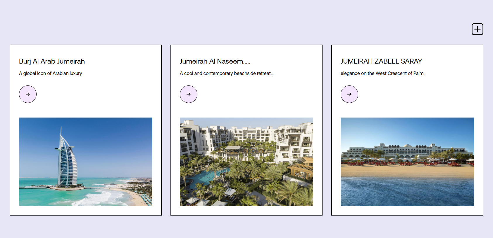
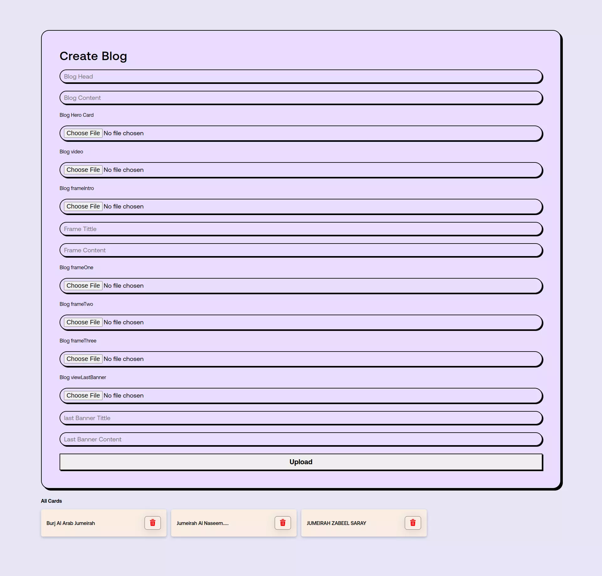
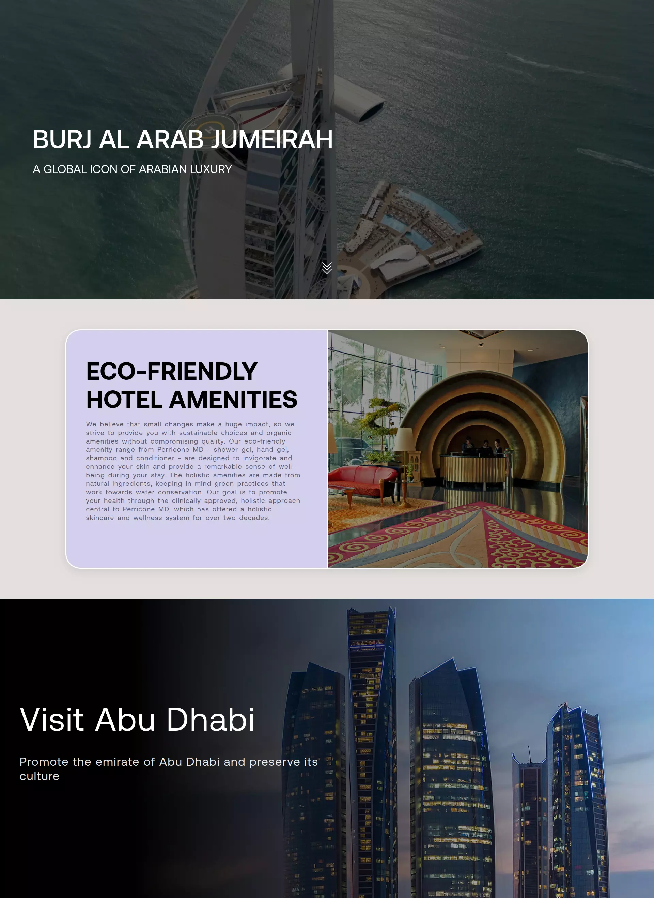

Firebase Firestore & Storage for CRUD and file uploads. Animated loops enhanced blog data display. Fixed arrays maintained data consistency during form uploads. APIs populated the project with external data. Overall, this resulted in streamlined data management, dynamic visuals, and seamless integration with external sources.
Angular of the day
Techsembly
project
Hype
Angular
Blogs
Code
typescript
Techsembly
project
Hype
Angular
Blogs
Code
typescript
Techsembly
project
Hype
Angular
Blogs
Code
typescript
Features
FireBase
Animation
GSAP along with ScrollTrigger & Locomotive Animation library to create captivating animations. Drawing inspiration from my own creativity, I designed unique animations throughout the website, starting from an explosive egg animation on the page. I incorporated various other stunning animations to enhance the user experience, dynamic website.
Angular

I tackled the challenge of Integrating Firebase and animations into an Angular app. I developed a full-fledged app that smoothly retrieves dynamic data from a database. Although my project is a work in progress and not perfect, I continuously strive to enhance the website and learn over time, gaining valuable experience and improving my skills.
Cards With ID View
I implemented a loop of cards in the project, each associated with unique blog IDs. When a card is clicked, it opens a new page where data is dynamically populated in HTML. The cards showcase multiple animations, including a horizontal scroll animation. Additionally, there is an "Add" button that, when clicked, opens a new page displaying a form to create a blog. This form captures user input for writing custom content.

create blog Page
created a blog page that allows users to add new posts. When the user clicks on the "Add" button, a form page opens up where they can enter the blog title, content, and upload media data, such as images or videos. I implemented a fixed number of form fields to maintain consistency and organization. Upon submission, the data is uploaded to the Firebase database as a string, and the media files are stored in the Firebase Storage. I generated URLs for the uploaded media, linking them to the corresponding blog post in the database. To enhance the user experience, I implemented a card display on a separate section that shows all the blog posts' titles and includes a delete icon. This functionality allows easy management of blog posts for both administrators and regular users. Administrators have the ability to delete posts if needed, ensuring the cleanliness of the blog. Throughout the development process, I received assistance from the chapter, which aided me in implementing these features effectively. By incorporating these elements, I created a user-friendly blog page that enables easy content creation, storage, and management.

Ready Blog
blog page, and now the data that is filled in goes directly to the database. The view page is designed to display the data smoothly by populating it in HTML. Furthermore, I have integrated a pre-built horizontal scroll component with animation effects, providing a seamless and visually appealing browsing experience.
This feature allows users to navigate through the blog posts effortlessly and enjoy the content in an engaging manner. Overall, these enhancements contribute to a polished and user-friendly blog page that effectively showcases the populated data.
